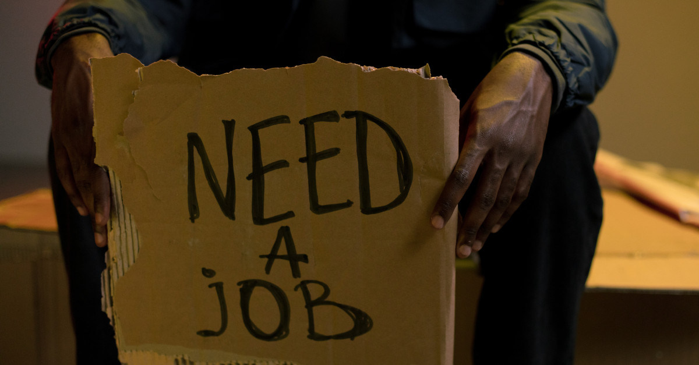

Let’s Talk About Careers in Clinical Informatics and White Swans
So I am not one to write blogs about my thoughts, mainly just updates on meetings I am hosting. Today things are different! Let’s talk about careers and swans.
As many of you may know, I am a council member of the Faculty of Clinical Informatics (FCI). A fair number of you will know that we had our member’s conference on the 1st of December in London. This was a fantastic meeeting, with lots of great talks about the new FCI strategy, great projects happening across the UK and also a great session about good digital innovation (something close to my heart). It was lovely to meet up with friends and colleagues, and plan for the future ahead.
Now, the low point for me at the member’s conference was the fact that the closing drinks reception were sponsored by a company named Palantir. I do not want to distract from the title of this blog, but let’s just say that I was not best impressed by the FCI’s decision (which I was not party to) to accept monies from said company. The only reason that I bring it up is that 9 of the conference members (me included) decided that we did not want to put drinks to lips sponsored by a company with a shady history. So what did we do, we had a splinter off party down the local pub, the White Swan.
Now this is where the story got interesting. So a number of us got talking about the conference, the sponsored drinks and then after a few more pints, career opportunies for junior doctors (I happened to be sitting with doctors). This is where it struck me; the conversations I was having with 3 of the 9 splinter-group-go-pub members reminded me that I was exactly in their position just 12 months ago! 12 months ago I started looking for a new job in digital innovation after getting very little traction with the digital team in my current role. I am not talking about a new role in the more political positions in the NHS, which I feel a lot of people aspire to (rightly or wrongly), but I mean clinicians-who-code positions!
I’ll come back to the clinicians-who-code remark.
What I realised when I spoke to Anita Phung, Michael Kriger and Alistair Cannon down the White Swan is that it is hard being a passionate, detail-focused clinician that both deeply understands the clinical aspects of a digital build but also has in depth knowledge of how digital really works, how you can programmatically code it, what it can and cannot do and just make things better for frontline staff. The latter remark is what drives me to make digital healthcare great! It is something that I have done now for the last 3 years with different apps I have build for my current respiratory department and it is something I want to continue doing. I am lucky! I have just been offered a job in industry with the forward thinking Sleepstation / Born Digital Health company. I previously referred insomnia patients to them, and now I will be helping them with my knowledge of sleep medicine and digital medicine. However, many junior clinicians do not get this kind of break!
Now, let’s talk about clinicians-who-code. There is no exact definition for this, and I have had many conversation about improving on the name. What I have settled for is:
Someone that understands, in deepth, the clinical area being studied and the coding language that is needed to provide great digital innovation to said clinical area. One does not need a formal clinical qualification to satisfy the “clinical” part of this name.
So you don’t need to be a doctor, nurse, pharmacist, midwife, etc, etc to be a clinician-who-codes, just someone that has learnt about the clinical area that needs digital improvement and then can apply said improvement using their digital knowledge (from a code upwards approach). My friend and colleague Grant Vallance nicely fits this bill.
So anyone can be a clinician-who-codes really, it is just about mindset and learning. I would argue (but of course I would as I am one) that we needs 100s, if not 1000s of clinicians-who-code in the NHS to tackle bad digital implementations, break them down, rebuild them and build anew. We need digital systems that improve patient management, experience and outcomes. We need systems that reduce the workloads and improve the workflows of our fellow staff. There are too many digital systems used across the NHS that just are not fit for purpose. Let’s build from the ground up. Let’s get our junior doctors, nurses, pharmacists, midwives, etc, and those inspiring coders that just want to make things better into postions to do just that, make things better. We need to start having these conversations about how to do things better. We need to have career paths for our junior clinical informaticians that are not just aimed at high level managerial NHS digital roles. We need to use the passion that is so evident in these young people, provide them with jobs and just allow them to improve things for everyone. The ways we have been doing things so far in the NHS has had very variable results. It is time to let the new blood show us the way, we just need to give them the career paths to do so!
So Let’s Do Digital right. Let’s get Clinicians-who-code working!
P.S. Perhaps the code name for creating great career opportunies for clinicians-who-code should be called “White Swan”?
Shout out to Ron Lach for this blog’s thumbnail (https://www.pexels.com/photo/homeless-man-holding-cardboard-in-hands-9830110/)